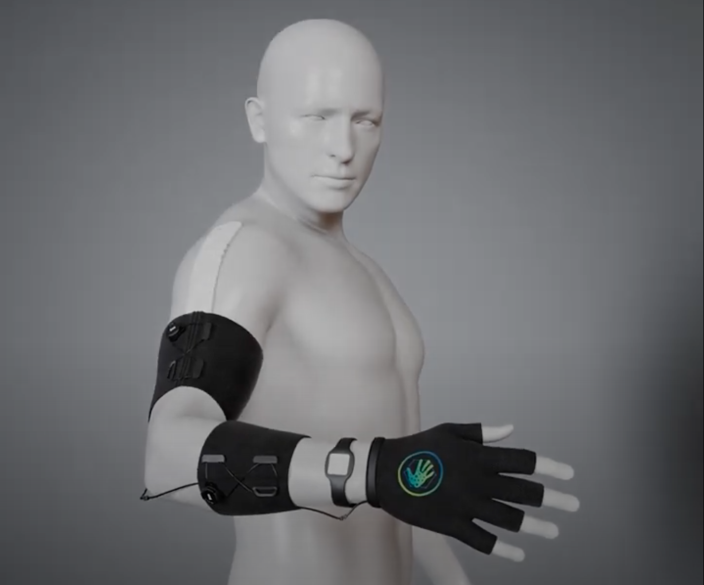
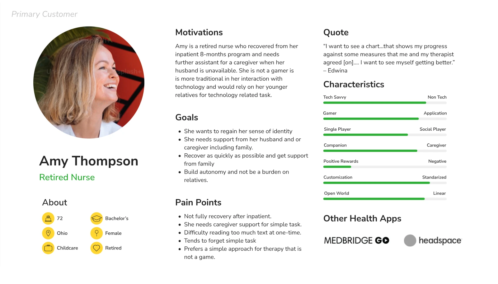
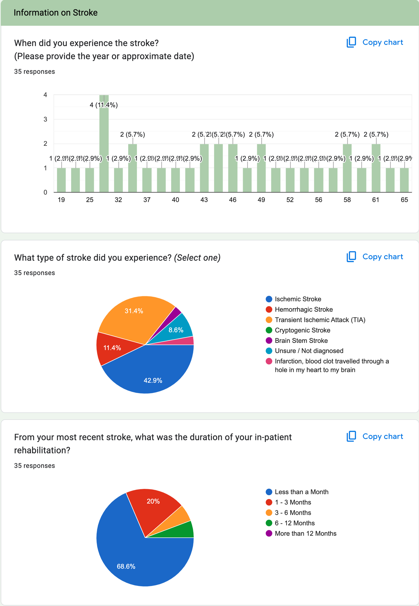
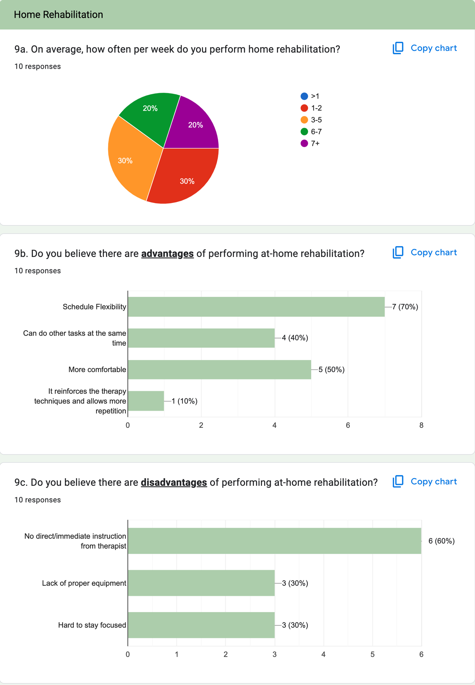
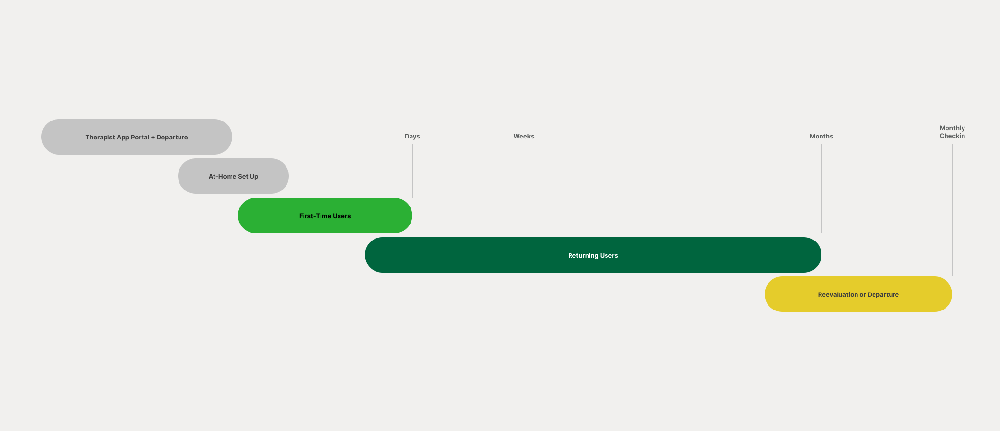
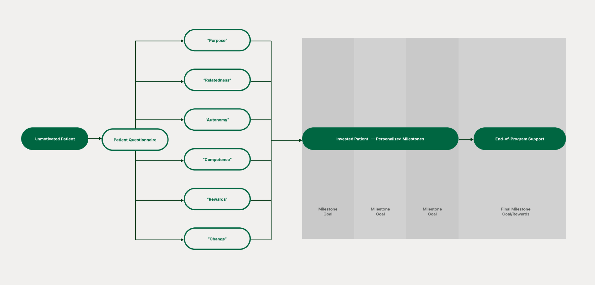
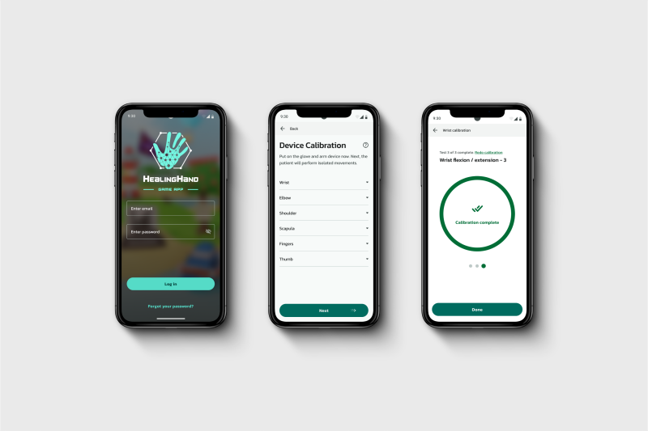

Making Stroke Recovery More Tolerable

• The Bigger Picture
Context
Stroke recovery does not end when patients leave the clinic, but motivation often does. I helped define how a digital experience could sustain engagement during at-home rehab using behavioral design and gamification.
• What Was Broken
Problem
Patients will be provided with a at-home device designed to measure progress to enhance personalization.

Patients
Patient emotional state can significantly hinder progress, highlighting the need for healthcare providers to address the factors affecting their motivation. They struggle with repetitive, isolating exercises leading to low adherence.
Business
Drop-off after discharge limits outcomes and long-term product value. Stroke therapy at-home programs MUST be considerate of the need for patients to regain personal autonomy.
• Seat At The Table
Role

Led interviews, surveys, and usability testing.
Built the research framework from scratch.
Translated behavioral data into product direction.
• Reading Between Lines
Insight
"Motivation is not static. Patients move from needing emotional support to structure to achievement, and most rehab tools treat them like they are stuck in one phase."
Designing for changing motivation, not a single static state, became the core product principle.
• Signals From The Noise
Key Findings
Unmotivated stroke patients may resist therapy, participate minimally in exercises, and show little interest in setting goals.


Measured to Everyday Movements
Exercises tied to real life feel achievable and easier to repeat. Everyday task may include brushing teeth, combing hair, buttoning up shirt, and opening a door.
Progress tracking is motivation
Visible improvement in a client portal increases confidence and weekly consistency.
One size fails everyone
Different motivational profiles need different support systems.
• Where Ideas Landed
Solution


Research direction
Patients are open to the idea of gamification but remain skeptical in its application. Hexad Model remains the best tool to measure the perceived motivation of user types for gamification.
Product direction
Build a phased experience that evolves questionnaires, key milestones, and rewards with recovery stage. Stroke patients are different from gamers so the motiviational metrics were only used as a starting point.
• Moving The Needle
Impact
How it helps
A large effort has shifting towards understanding the underlying motivation of different player types. Clear motivation loops improve adherence, accelerate recovery outcomes, and increase long-term retention.


• Lessons Worth Keeping